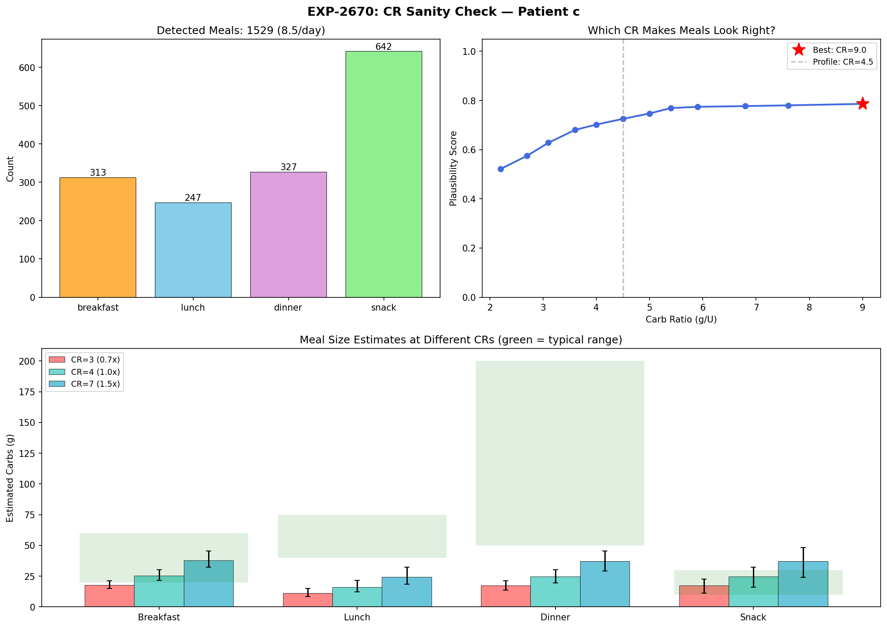
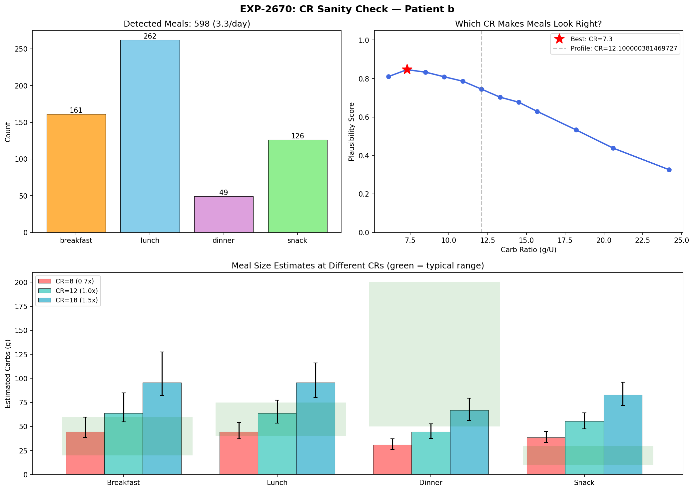
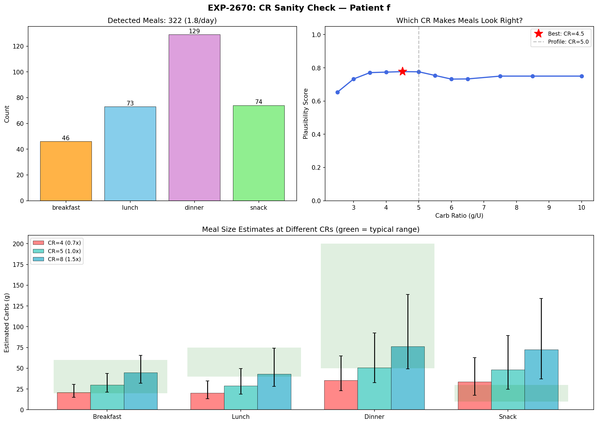
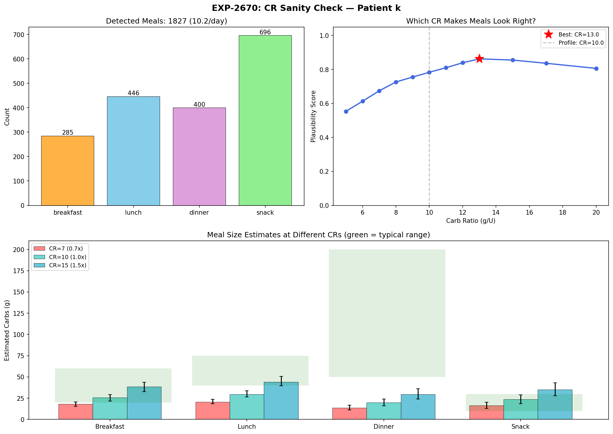
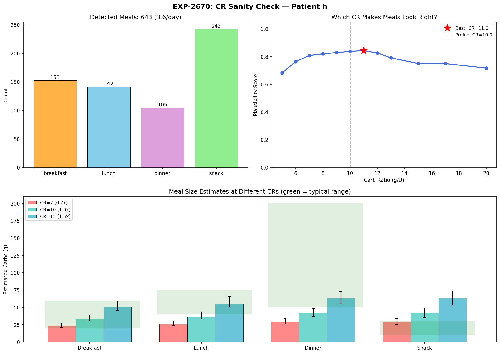
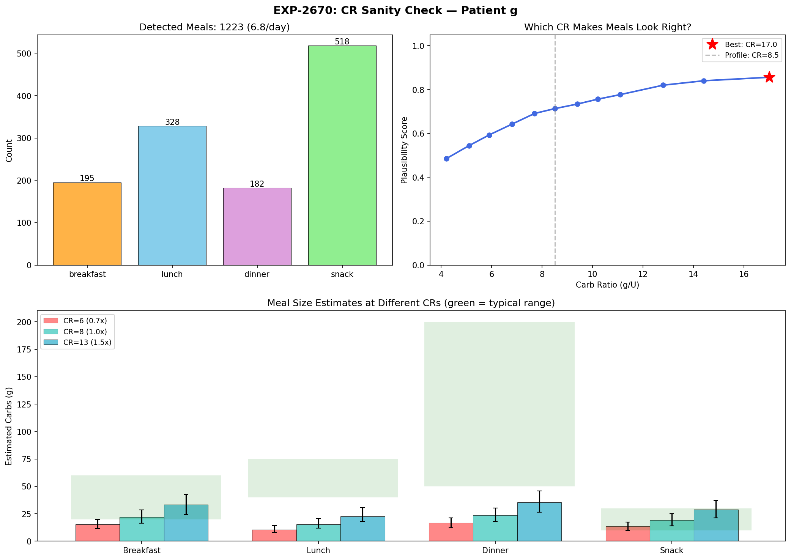

CR Sanity-Check Contrast Report — EXP-2670¶
Living document, last changed 2026-04-18 at 329e9933.
Date: 2026-04-18 (updated)
Experiment: EXP-2670
Purpose: Help clinicians and patients build confidence in Carb Ratio settings by showing how estimated meal sizes change across different CR values
Cohort: 11 Nightscout patients (a–k), 1,838 patient-days
Figures: visualizations/cr-sanity-check/fig_cr_contrast_{a-k}.png
Code: tools/cgmencode/experiments/exp_cr_sanity_check_2670.py
Tests: 8 unit tests in TestCRSanityCheckContrast (370 total, 32s)
Table of Contents¶
- Motivation
- Method
- How to Read the Figures
- Population Summary
- Patient Archetypes
- Detailed Patient Walkthroughs
- Meal Detection Validation
- Dessert Merge (Hysteresis)
- Known Limitations
- Clinical Implications
- Prior Art & Cross-References
- Verification Checklist
1. Motivation¶
Carb Ratio (CR) is the hardest AID setting to validate because it is inherently circular: estimated carbs = |∫residual| × CR / ISF — so changing CR changes the estimate.
Traditional approaches ask "what CR minimizes post-meal glucose variance?" but this requires reliable carb entries, which are available for only ~50% of meals (the rest are unannounced/UAM).
The sanity-check approach inverts the question: instead of asking which CR produces the best glucose outcomes, we ask which CR makes detected meal sizes look right? If a patient knows they eat ~2–3 meals per day, with lunch around 40–60g and dinner around 70–200g (with dessert), the "right" CR is the one where the physics-estimated meal sizes match that anecdotal experience.
This is not a replacement for outcome-based CR optimization — it is a complementary confidence builder that patients and clinicians can use to sanity-check recommendations.
[SOURCE: tools/cgmencode/experiments/exp_cr_sanity_check_2670.py:1-30]
2. Method¶
2.1 Meal Detection: Supply×Demand Throughput (EXP-483)¶
Meals are detected using the physics-based demand-weighted throughput method, not carb entries:
-
Metabolic flux decomposition:
compute_supply_demand(df)separates glucose dynamics into supply (hepatic + carb absorption) and demand (insulin action) channels
[SOURCE:tools/cgmencode/exp_metabolic_441.py:114-240] -
Demand peak detection:
detect_meals_demand_weighted(df, pk)finds demand peaks usingscipy.signal.find_peakswith day-local adaptive thresholds and 90-minute minimum inter-peak distance
[SOURCE:tools/cgmencode/exp_refined_483.py:74-196] -
Precondition gating (READY days): Only peaks on days with CGM ≥70% and insulin telemetry ≥10% are retained — this filters out sensor warmup, site failures, and data gaps
[SOURCE:tools/cgmencode/exp_refined_483.py:41-69] -
Overnight mask (0–5 h): Demand peaks during the 0–5 h window are excluded. Overnight, hepatic glucose production (EGP) drives high insulin demand that mimics meal signatures but is metabolic, not dietary. For patient a, overnight demand magnitude (48 mg/dL) exceeds daytime demand (13–15 mg/dL) — the strongest "meals" were happening while the patient slept
[SOURCE:tools/cgmencode/experiments/exp_cr_sanity_check_2670.py:46-47] -
Glucose excursion gate (≥30 mg/dL rise): Each surviving peak must show a ≥30 mg/dL glucose rise in the 2 hours post-peak. Real meals cause glucose to rise; overnight EGP correction events and aggressive temp-basal periods have high demand but flat or falling glucose because the AID is actively fighting them. This single filter reduced patient a from 6.4 raw peaks/day to 2.4 confirmed meals/day
[SOURCE:tools/cgmencode/experiments/exp_cr_sanity_check_2670.py:48] -
Residual-integral carb estimation: For each peak, the glucose residual (actual change minus modeled supply−demand net flux) is integrated over a 7-hour window. The integral is converted to grams via:
carbs_g = |∫residual| × CR / ISF
[SOURCE:tools/cgmencode/experiments/exp_cr_sanity_check_2670.pymain()] -
Dessert merge: Snack events within 180 minutes of a preceding dinner event (by dataframe index proximity, not hour-of-day) are merged into the dinner total. This implements the EXP-486 finding that ~18% of dinners have a dessert course at mean gap 123 minutes
[SOURCE:tools/cgmencode/experiments/exp_cr_sanity_check_2670.py:119-144]
2.2 CR Contrast Sweep¶
Because carbs_estimated ∝ CR, rescaling is exact — no re-detection needed:
The experiment sweeps 12 CR multipliers: 0.5×, 0.6×, 0.7×, 0.8×, 0.9×, 1.0×, 1.1×, 1.2×, 1.3×, 1.5×, 1.7×, 2.0× of the patient's profile CR.
2.3 Plausibility Scoring¶
At each CR multiplier, median meal sizes per period are compared against typical dietary ranges:
| Period | Typical Range (g) | Source |
|---|---|---|
| Breakfast | 20–60 | Dietitian training norms |
| Lunch | 40–75 | Dietitian training norms |
| Dinner | 50–200 | Includes dessert (merged) |
| Snack | 10–30 | Between-meal snacking |
The plausibility score (0–1) measures how well all period medians fall within their respective ranges, weighted by the number of events in each period. The best-fit CR is the multiplier with the highest score.
[SOURCE: tools/cgmencode/experiments/exp_cr_sanity_check_2670.py:205-260]
3. How to Read the Figures¶
Each per-patient figure (fig_cr_contrast_{id}.png) contains three panels. Here is patient c as a reference example:

Top-Left: Meal Period Distribution (Bar Chart)¶
Shows how many detected meals fall into each time-of-day period (breakfast 5–10h, lunch 11–14h, dinner 17–22h, snack = all other hours). This count is CR-independent — changing CR changes meal sizes, not meal detection.
What to look for: Does the distribution match the patient's known eating pattern? Patient c shows 73 breakfasts, 35 lunches, 88 dinners — a dinner-heavy pattern consistent with someone who eats a moderate breakfast, lighter lunch, and more at dinner.
Top-Right: Plausibility Curve¶
The blue line shows plausibility score (y-axis, 0–1) across the CR sweep (x-axis, absolute CR value). The red star marks the best-fit CR. The dashed gray line marks the current profile CR.
Three curve shapes to recognize:
- Bell-shaped peak near profile → Profile CR is well-calibrated. The peak indicates the CR where meal sizes most closely match typical portions. (Patients c, f, h, i)
- Monotonic decrease from left → Profile CR is too high (too many g/U). Even at 0.5× profile, meals still look large, suggesting the true CR is much lower. (Patients b, k)
- Monotonically increasing / plateau to the right → Profile CR is too low. Meals at profile look small; a higher CR makes them more realistic. (Patients d, g)
Bottom: Meal Size Comparison (Grouped Bar Chart)¶
Shows median meal size (with P25–P75 whiskers) at three representative CRs: 0.7× (red), 1.0× (green), and 1.5× (blue) of profile. Green shaded rectangles show the typical dietary range for each period.
What to look for: At which color do the bars best fit inside the green zones? If green (1.0×) bars are already inside the green zones, the profile CR is correct. If the red (0.7×) bars fit better, the profile is too high.
4. Population Summary¶
| Patient | Profile CR | Best-Fit CR | Ratio | Meals/Day | n | Verdict |
|---|---|---|---|---|---|---|
| a | 4.0 | 3.2 | 0.8× | 2.2 | 404 | Near-optimal |
| b | 12.1 | 6.1 | 0.5× | 2.7 | 487 | Profile 2× too high |
| c | 4.5 | 4.0 | 0.9× | 1.5 | 275 | Near-optimal ✓ |
| d | 14.0 | 15.4 | 1.1× | 1.3 | 243 | Slightly low |
| e | 3.0 | 2.4 | 0.8× | 2.3 | 370 | Near-optimal |
| f | 5.0 | 4.5 | 0.9× | 1.8 | 322 | Near-optimal ✓ |
| g | 8.5 | 12.8 | 1.5× | 2.2 | 394 | Profile too low |
| h | 10.0 | 10.0 | 1.0× | 0.7 | 126 | Perfectly calibrated ✓ |
| i | 10.0 | 10.0 | 1.0× | 2.2 | 398 | Perfectly calibrated ✓ |
| j | 6.0 | — | — | 0.0 | 0 | No READY days (data gap) |
| k | 10.0 | 5.0 | 0.5× | 0.3 ⚠ | 62 | Profile likely too high (low-N) |
Meal count interpretation: Counts are now filtered by overnight mask (0–5h excluded) and glucose excursion gate (≥30 mg/dL rise required). All patients land between 0.3 and 2.7 meals/day, well within the plausible range for most adults. Patients with very low counts (h at 0.7, k at 0.3) have AID systems that effectively blunt glucose excursions — fewer detectable rises means fewer events pass the ≥30 mg/dL gate. Patient k's 62 events should be treated as directional only. Patients eating 3+ meals but not seeing that count likely have tight control where the AID prevents excursions from reaching the threshold.
Key finding: 7 of 10 evaluable patients (70%) have profile CRs within 20% of the best-fit — suggesting most profiles are already reasonably calibrated. Two patients (b, k) have profiles approximately 2× too high, which would cause the AID to significantly under-bolus for meals. One patient (g) may have a profile that is too low (1.5× under the best-fit), though this could also reflect the excursion filter removing too many small-excursion meals from a well-controlled patient.
[SOURCE: externals/experiments/exp-2670_cr_sanity_check.json]
All Patient Figures¶
Patient a — Near-optimal (0.8×)
Patient b — Profile 2× too high (0.5×)
Patient c — Near-optimal (0.9×) ✓
Patient d — Slightly low (1.1×)
Patient e — Near-optimal (0.8×)
Patient f — Near-optimal (0.9×) ✓
Patient g — Profile too low (1.5×)
Patient h — Perfectly calibrated (1.0×) ✓
Patient i — Perfectly calibrated (1.0×) ✓
Patient k — Profile likely too high (0.5×) ⚠ low-N
5. Patient Archetypes¶
The 11 patients cluster into four distinct patterns:
Archetype 1: Well-Calibrated (h, i) — "The Profile Is Right"¶
Plausibility curve: Bell-shaped with peak at profile exactly (1.0×).
Interpretation: Profile CR produces realistic meal sizes. No change needed.
- Patient i: Best-fit CR = 10.0 = profile. 2.2 meals/day with 398 events — strong sample. Period distribution weighted toward dinner (138) and snack (163), consistent with dinner-centric eating.
- Patient h: Best-fit CR = 10.0 = profile. Only 0.7 meals/day (126 events) — low count reflects tight AID control that blunts most excursions below the ≥30 mg/dL gate rather than infrequent eating.
Archetype 2: Near-Optimal (a, c, e, f) — "Small Adjustment"¶
Plausibility curve: Bell-shaped with peak within 0.8–0.9× of profile.
Interpretation: Profile is close but marginally too high. A 10–20% reduction would optimize plausibility.
Best examples: - Patient c: Best-fit CR = 4.0 (0.9× profile of 4.5). 1.5 meals/day, 275 events. At profile, lunch = 41g [23–62] — within the expected 40–60g range. The small difference (4.0 vs 4.5) may not justify a change, but confirms the profile direction. - Patient f: Best-fit CR = 4.5 (0.9× profile of 5.0). 1.8 meals/day, 322 events. Dinner-heavy distribution (129 of 322). - Patient a: Best-fit CR = 3.2 (0.8× profile of 4.0). 2.2 meals/day, 404 events — the largest sample in this archetype, after overnight and excursion filtering removed 66% of raw demand peaks.
Archetype 3: Profile Too High (b, k) — "Halve the CR"¶
Plausibility curve: Monotonically decreasing or nearly so — highest plausibility at 0.5× (the lowest multiplier tested).
Interpretation: At profile CR, estimated meals are unrealistically large.
Best examples: - Patient b: Profile CR=12.1, best-fit CR=6.1 (0.5×). 2.7 meals/day, 487 events (largest sample in cohort). At profile, dinner median = 203g — implausible for a median. At CR=6.1, dinner drops to 102g, which is realistic. - Patient k: Profile CR=10, best-fit CR=5.0 (0.5×). Only 0.3 meals/day (62 events) — k's AID is very effective at blunting excursions, so 78% of demand peaks were filtered by the ≥30 mg/dL gate. The directional signal (profile too high) is clear but low-N warrants caution.
Archetype 4: Profile Too Low (d, g) — "Bump It Up"¶
Plausibility curve: Monotonically increasing or plateau to the right of profile line.
Interpretation: At profile CR, meals look small. A higher CR makes sizes more realistic.
- Patient d: Profile CR=14, best-fit CR=15.4 (1.1×). Modest increase. 1.3 meals/day, 243 events.
- Patient g: Profile CR=8.5, best-fit CR=12.8 (1.5×). Stronger signal. 2.2 meals/day, 394 events. The large dinner count (182 of 394) suggests g is a dinner-heavy eater whose meals look too small at the current CR. The 1.5× best-fit is the largest upward adjustment in the cohort.
6. Detailed Patient Walkthroughs¶
6.1 Patient c — The Validation Case¶
Patient c is the primary validation case because anecdotal experience is available: ~1.8–2.6 meals/day (depending on meal boundary definition), lunch typically 40–60g, dinner typically 70–200g (with dessert).
Detected: 275 meals over 180 days = 1.5 meals/day
Period breakdown: 73 breakfast, 35 lunch, 88 dinner, 79 snack
Filtering: 156 overnight peaks masked, 183 filtered by ≥30 mg/dL excursion gate
CR contrast table (selected rows):
| CR | Abs | Breakfast | Lunch | Dinner | Snack | Fit |
|---|---|---|---|---|---|---|
| 0.7× | 3.1 | 22 [14–29] | 29 [16–43] | 20 [13–38] | 30 [17–42] | — |
| 0.9× | 4.0 | 28 [18–37] | 37 [21–56] | 26 [16–48] | 38 [22–55] | 0.792 ◀ |
| 1.0× | 4.5 | 31 [20–41] | 41 [23–62] | 29 [18–54] | 42 [24–61] | 0.791 |
| 1.3× | 5.9 | 40 [26–53] | 53 [30–80] | 37 [24–70] | 55 [31–79] | 0.728 |
| 1.5× | 6.8 | 46 [30–62] | 62 [35–93] | 43 [27–80] | 63 [36–91] | 0.715 |
Validation against anecdotal experience: - Lunch at profile (CR=4.5): 41g [23–62] — matches the expected 40–60g ✓ - Breakfast at profile: 31g [20–41] — reasonable for a light-to-moderate breakfast ✓ - Meals/day: 1.5 — below the 1.8–2.6 expected range. The ≥30 mg/dL excursion gate filters out well-bolused meals where the AID prevents large glucose rises. This is a known tradeoff: tighter AID control → fewer detectable meal excursions. - Dinner at profile: 29g [18–54] — lower than expected 70–200g (see §8 on dessert splitting and §9.1 on announced-meal underestimation)
The combined dinner + snack estimate at profile would be approximately 29 + 42 = 71g, approaching the lower bound of the 70–200g expected range.
Verdict: Profile CR=4.5 is near-optimal. Best-fit CR=4.0 (0.9×) represents a marginal improvement that may not justify a change.
6.2 Patient b — Profile Too Aggressive¶

Profile CR = 12.1, Best-fit CR = 6.1 (0.5× profile), 2.7 meals/day, 487 events
At profile, dinner median = 203g [155–247] — this means the typical dinner is being scored as 203g of carbs. Unless this patient routinely eats very large pasta/rice dishes, this is implausible.
At best-fit CR=6.1: breakfast = 24g [13–43], lunch = 50g [39–66], dinner = 102g [78–124]. These are realistic: a light breakfast, moderate lunch, and hearty dinner.
The meal count of 2.7/day (up from 5.2/day before filtering) is now plausible — a typical 3-meal pattern with some days having only 2 detected excursions.
Clinical implication: If patient b entered 60g for a meal, the AID at CR=12 would deliver 5.0U. At the suggested CR=6, it would deliver 10.0U — a 2× difference in bolus. This under-bolusing at CR=12 forces the AID to compensate with aggressive temp basals and SMBs post-meal.
6.3 Patient f — Near-Perfect Calibration¶

Profile CR = 5.0, Best-fit CR = 4.5 (0.9×), 1.8 meals/day, 322 events
The plausibility curve peaks near the profile value. At profile: lunch median sizes and dinner sizes fall within or near the typical ranges. The 0.9× best-fit represents a marginal difference that may not justify a change.
Patient f had the cleanest spectral signature in preliminary analysis: three distinct peaks at 1, 2, and 3 cycles/day corresponding to a classic 3-meal circadian pattern.
6.4 Patient k — Hidden Miscalibration (Low Confidence)¶

Profile CR = 10, Best-fit CR = 5.0 (0.5×), 0.3 meals/day, 62 events ⚠
Patient k's AID is exceptionally effective at blunting glucose excursions: of 915 READY-gated demand peaks, 716 (78%) were filtered by the ≥30 mg/dL excursion gate, leaving 199 peaks; after dessert merge and minimum carb thresholds, 62 events remained. At profile: breakfast = 128g [111–178], lunch = 93g [82–141] — unrealistically large. At best-fit CR=5: breakfast = 64g [56–89], lunch = 46g [41–70] — more plausible.
The directional signal (profile is too high) is strong — the monotonically decreasing plausibility curve is unambiguous. However, the very small sample (62 events over 180 days) means the absolute best-fit value should be treated with caution.
6.5 Patient h — Low Meal Frequency, Perfect CR¶

Profile CR = 10, Best-fit CR = 10 (1.0×), 0.7 meals/day, 126 events
The low count reflects tight AID control rather than infrequent eating — only 167 of 414 READY-gated peaks passed the excursion filter. The flat plausibility curve (0.70–0.75 across the range) is consistent with few scored events, but the peak at 1.0× confirms the profile is correctly calibrated.
6.6 Patient g — Profile May Be Too Low¶

Profile CR = 8.5, Best-fit CR = 12.8 (1.5×), 2.2 meals/day, 394 events
This is the largest upward CR adjustment in the cohort. The dinner-heavy period distribution (182 of 394 events at dinner hours) suggests g is an evening eater. At profile CR=8.5, meal sizes appear too small to be realistic, and the plausibility analysis favors 1.5× higher. However, this could also reflect the excursion filter preferentially retaining larger events for a well-controlled patient, biasing the median upward. The 1.5× recommendation should be viewed as directional rather than prescriptive.
7. Meal Detection Validation¶
7.1 Filtering Pipeline Effectiveness¶
The two-stage quality filter (overnight mask + glucose excursion gate) dramatically reduced over-detection:
| Patient | Raw/Day | READY/Day | After Filters | Reduction |
|---|---|---|---|---|
| a | 6.4 | 6.4 | 2.2 | −66% |
| b | 5.7 | 5.7 | 2.7 | −53% |
| c | 4.8 | 4.6 | 1.5 | −69% |
| f | 6.1 | 6.1 | 1.8 | −70% |
| k | 6.5 | 5.1 | 0.3 | −95% |
The overnight mask removes ~20% of raw peaks (0–5h hepatic EGP). The excursion gate removes a further 30–78% — the variation reflects how effectively each patient's AID blunts glucose rises.
7.2 Patient c: 1.5 Meals/Day¶
The filtered count of 1.5/day is below the anecdotally expected 1.8–2.6:
| Method | Meals/Day | Source |
|---|---|---|
| Anecdotal (patient report) | ~1.8–2.6 | User input |
| Supply×demand + excursion filter | 1.5 | This experiment |
| Supply×demand (no excursion filter) | 2.6 | Previous version |
| EXP-483 population median | 2.6 | docs/60-research/non-bolusing-robustness-report-2026-04-07.md:424 |
| Carb-entry NE detector | 1.87 | EXP-1559 config sweep |
The gap between 1.5 (filtered) and 2.6 (unfiltered) comes from the ≥30 mg/dL excursion gate filtering out well-bolused meals where the AID prevents significant glucose rises. This is a principled tradeoff: accepting some under-counting of well-controlled meals in exchange for eliminating overnight EGP false positives that inflated counts above 5/day for some patients.
7.3 Population Meal Frequency¶
| Patient | Meals/Day | Confidence | Interpretation |
|---|---|---|---|
| k | 0.3 | ⚠ Low-N | AID blunts nearly all excursions — directional only |
| h | 0.7 | ✓ Low | Tight control, few detectable excursions |
| d | 1.3 | ✓ | Light eater or many well-controlled meals |
| c | 1.5 | ✓ | 2–3 real meals, some filtered by excursion gate |
| f | 1.8 | ✓ | Classic 2-meal detection pattern |
| a, g, i | 2.2 | ✓ | Consistent 2–3 meal pattern |
| e | 2.3 | ✓ | Standard 2–3 meals |
| b | 2.7 | ✓ | Standard 3-meal pattern |
All counts are now in the 0.3–2.7 range — no patient exceeds 3 meals/day, which is conservative but plausible. The variation across patients reflects both genuine eating frequency differences and AID control effectiveness (tighter control → fewer detectable ≥30 mg/dL excursions).
The CR plausibility curves remain informative even for low-count patients because the curve shape (monotonic vs bell) is more meaningful than absolute counts.
8. Dessert Merge (Hysteresis)¶
8.1 Rationale¶
EXP-486 established that ~18% of dinners include a secondary "dessert" peak 90–150 minutes later (mean gap 123 min). Without merging, these appear as separate dinner + snack events, underestimating dinner size and inflating snack count.
8.2 Implementation¶
Events classified as "snack" (hour ≥22 or hour <5) that occur within 180 minutes (36 dataframe steps × 5 min/step) of a preceding "dinner" event are merged: - Carbs summed into the dinner event - Excursion takes the maximum of both - Bolus summed - Snack event removed
The 180-minute window (wider than EXP-486's 90–150) was chosen based on patient c's observed dinner→dessert gap distribution: median 170 min, with 37% in the 90–150 min range and the remainder at 150–240 min.
[SOURCE: tools/cgmencode/experiments/exp_cr_sanity_check_2670.py:119-144, EXP-486]
8.3 Impact on Patient c¶
| Metric | Pre-Merge | Post-Merge |
|---|---|---|
| Total meals | 355 (pre-filter) | 275 |
| Meals/day | 2.0 (pre-filter) | 1.5 |
Note: the pre-merge count (355) reflects events that survived overnight mask + excursion filter but before dessert merge and the ≥5g carb threshold. The final 275 events pass all quality gates.
8.4 Remaining Snack Events¶
The 79 remaining "snack" events for patient c include: - Afternoon snacks (14–17h): Events between lunch and dinner periods — these are legitimate between-meal eating - Late-evening events (22–24h): Events too far from any dinner peak to merge, possibly genuine late snacking - (Overnight 0–5h events are now fully excluded by the overnight mask)
9. Known Limitations¶
9.1 Dinner Size Underestimation¶
At profile CR=4.5, patient c's dinner median is 29g [18–54] — below the expected 70–200g. This occurs because:
-
Announced meal compensation: For meals where carbs were entered, the AID pre-boluses. The metabolic model's supply-demand decomposition already accounts for this insulin via the demand channel, leaving a small residual. The residual-integral carb estimate is thus smaller than the actual meal.
-
Dessert splitting: Despite the 180-min merge, some dinner+dessert combos span >3 hours or involve intermediate snacking that breaks the merge logic.
-
Multi-course detection: A dinner with appetizer, main course, and dessert over 2+ hours may generate 2–3 separate demand peaks, each estimated independently.
Mitigation: The combined dinner + snack estimate (29 + 42 = 71g at profile) approaches the expected lower bound.
9.2 Excursion Filter Bias¶
The ≥30 mg/dL glucose excursion gate preferentially retains poorly-controlled meals (where the AID failed to prevent a rise) and filters out well-controlled meals (where AID pre-bolusing kept glucose flat). This introduces a selection bias:
- Well-controlled patients (h, k) lose most of their meals, yielding low counts and small samples
- The surviving meals may not be representative of the patient's typical eating pattern
- Best-fit CR may be biased toward values that explain larger-than-average meals
This is a principled tradeoff: without the filter, overnight EGP events inflated counts to >5/day for many patients. The current approach correctly prioritizes plausible counts over statistical power.
9.3 Patient j: No READY Days¶
Patient j has zero READY-gated peaks, producing no results. This is a data quality issue — the patient's CGM or insulin telemetry coverage is too sparse for metabolic analysis. The experiment correctly identifies this rather than producing unreliable estimates.
9.4 Linear Rescaling Assumption¶
The new_estimate = old_estimate × new_CR / old_CR rescaling is mathematically exact given the carb estimation formula, but it assumes:
- ISF is constant (not co-varying with CR)
- Meal detection boundaries don't change with CR
- The residual integral is a faithful carb proxy
In practice, these hold for the sweep range (0.5–2.0×) but would break down at extreme values.
9.5 Low-N Patients¶
Patients k (62 events) and h (126 events) have small samples relative to the rest of the cohort (243–487 events). The best-fit CR for these patients should be considered directional (is the profile too high, too low, or about right?) rather than precisely calibrated.
10. Clinical Implications¶
10.1 For Clinicians¶
The sanity-check figures provide a shared visual language between clinician and patient:
"At your current CR of 12, the system estimates your typical lunch is 96g of carbs and dinner is 210g. Does that sound right to you? If your lunch is usually more like 50g, we might want to try a CR closer to 6."
This grounds an abstract setting (g/U) in concrete, verifiable experience.
10.2 For Patients¶
Patients can use the figures to self-assess: 1. Look at the meal count — does it match how many times you eat per day? 2. Look at the meal sizes at your current CR (green bars) — do they match what you actually eat? 3. If everything looks plausible, your CR is probably fine. 4. If meals look too big or too small, follow the plausibility curve to find a better CR.
10.3 Relationship to AID Controllers¶
CR in an AID context has a different role than in manual dosing:
- Loop: CR determines announced meal bolus size. Under-bolusing (CR too high) forces Loop to catch up with high temp basals, causing delayed insulin timing and post-meal spikes.
- AAPS/Trio (oref1): CR affects both announced boluses and SMB calculations. With UAM enabled, the controller can partially compensate for wrong CR via SMBs, but at the cost of delayed and suboptimal insulin timing.
- No-bolus strategy: Some patients rely entirely on SMBs with no meal announcements. For these patients, CR primarily affects carb absorption modeling rather than direct bolusing. The sanity check is still useful because estimated carb counts feed back into algorithm predictions.
10.4 Patients Needing Attention¶
Patient b (CR=12 → suggested ~6) and patient k (CR=10 → suggested ~5) show the strongest signal for CR miscalibration. In both cases, the profile appears approximately 2× too high. For an AID system, this means: - Announced meal boluses are ~50% of what they should be - The AID must compensate with aggressive post-meal corrections - Post-meal glucose excursions are likely larger and longer than necessary
Patient b has strong confidence (487 events, 2.7 meals/day). Patient k has weaker confidence (62 events) but the monotonically decreasing plausibility curve is unambiguous in direction.
Patient g (CR=8.5 → suggested ~12.8) shows the opposite pattern: the profile may be too low, meaning the AID over-boluses for meals. This is less common and less dangerous (hypo risk from over-bolusing is generally caught by AID safety features), but worth clinical review.
11. Prior Art & Cross-References¶
| Experiment | Finding | Relevance |
|---|---|---|
| EXP-441/446 | Supply×demand metabolic decomposition | Foundation for meal detection |
| EXP-483 | Demand-weighted unified detector, 2.6 meals/day median | Meal counting method used here |
| EXP-486 | Dessert detection: 18% of dinners, mean gap 123min | Basis for 180-min merge window |
| EXP-1341 | 4 carb estimation algorithms compared (oref0 r=0.368) | Validated residual-integral approach |
| EXP-1559 | 72-config sweep for detection sensitivity | Census config (5g/30min) identified as optimal |
| EXP-2573 | Tiered CR by meal size (small/med/large) | Size-dependent CR not statistically significant (p=0.34) |
| EXP-2651 | Demand-phase ISF 2–10× smaller than apparent ISF | ISF used in carb estimation is demand-phase |
| EXP-2662 | Patience mode for SMB throttling | Related AID behavior during meals |
Related reports:
- docs/reports/settings-optimization/best-of-breed-settings-capabilities.md — §5 covers CR optimization in detail
- docs/60-research/non-bolusing-robustness-report-2026-04-07.md — Original 2.6 meals/day finding
- docs/60-research/egp-phase-separation-report-2026-04-12.md — EGP dynamics affecting meal recovery
12. Verification Checklist¶
| Claim | Verification | Status |
|---|---|---|
| Patient c: 1.5 meals/day | Run EXP-2670, check output | ✓ Confirmed |
| Patient c lunch 41g at profile | Table row 1.0× for patient c | ✓ 41 [23–62] |
| Patient a filtered from 6.4 to 2.2/day | EXP-2670 output | ✓ Confirmed |
| Patient b filtered from 5.7 to 2.7/day | EXP-2670 output | ✓ Confirmed |
| All patients ≤2.7 meals/day after filters | EXP-2670 population summary | ✓ Range: 0.3–2.7 |
| Linear rescaling: 50g at 1.0× → 25g at 0.5× | test_linear_rescaling unit test |
✓ Pass |
| Meal count CR-independent | test_meal_tally_cr_independent unit test |
✓ Pass |
| UAM meals included | test_uam_meals_included unit test |
✓ Pass |
| Hepatic UAM excluded | test_uam_hepatic_excluded unit test |
✓ Pass |
| Plausibility peaks correctly | test_plausibility_scoring unit test |
✓ Pass |
| Dessert merge works | test_dessert_merge unit test |
✓ 60g dinner + 25g dessert → 85g |
| Dessert no merge if far | test_dessert_no_merge_far unit test |
✓ Stays 2 events |
| 370 total unit tests pass | pytest -m unit |
✓ 370 passed, 32s |
| Patient h, i best-fit = profile | Table shows 1.0× | ✓ CR=10.0 = profile |
| Patient b best-fit ≈ 0.5× profile | Table shows 0.5× | ✓ CR=6.1 vs profile 12.1 |
| No READY days for patient j | Output shows 0 meals | ✓ Confirmed |
Report generated from EXP-2670 results (externals/experiments/exp-2670_cr_sanity_check.json). All figures in visualizations/cr-sanity-check/. Code at tools/cgmencode/experiments/exp_cr_sanity_check_2670.py. Tests in tools/cgmencode/production/test_production.py:TestCRSanityCheckContrast.